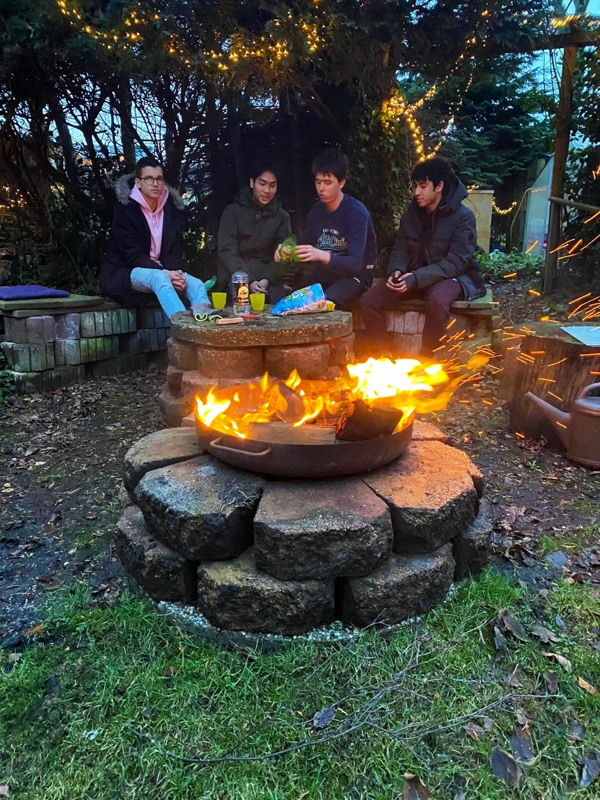

Welcome to the About Me page
On this page, you'll find all kinds of information about who I am
I studied ICT at the Amsterdam University of Applied Sciences, where I worked in project teams and worked on projects for various clients.
This gave me experience in project management, collaboration, and effective communication.
I chose this study because I am very interested in computers, software, and business services. I had little IT experience before I started, but that did not hinder me during my studies.
In the future, I would like to do something in IT, preferably something between IT management and IT security, because my interests lie between these two areas.
I also find sustainability important. In the future, I think it is essential that IT not only develops but also contributes to global sustainability. For example, through automation to save costs and energy.
In my free time, I mainly work, study, sometimes hang out with friends, and exercise.
I also enjoy gaming and doing things with my hands.
I’ve been swimming since I was little, and from age 11 to 19, I did competitive swimming at WZ&PC Purmerend.
I live at home with my parents and sister. My mother grew up in Vietnam and my father in Hong Kong. My sister and I were both born in the Netherlands.
Below is a photo of me and my friends: Duncen (left), Leon (middle right), and Ayoub (right).
